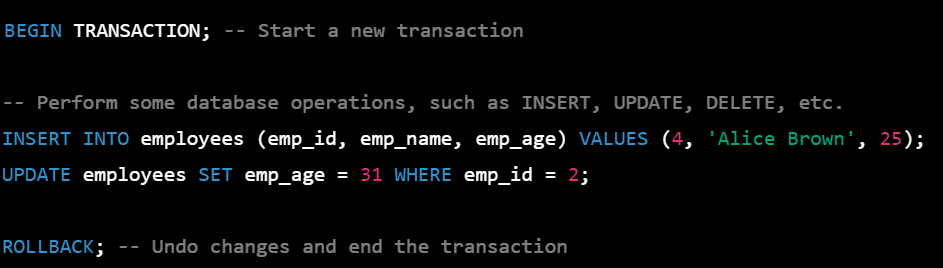

In SQL, the ROLLBACK command is used to undo or cancel the changes made within a transaction and return the database to its previous state. It is typically used in combination with the BEGIN TRANSACTION and COMMIT commands to manage transactions. When you execute a ROLLBACK command, any changes made to the database within the current transaction are undone, and the database is returned to its state before the transaction started. This can be helpful in cases where an error occurs during a transaction or when you want to manually undo changes made within a transaction.
Rollback;
